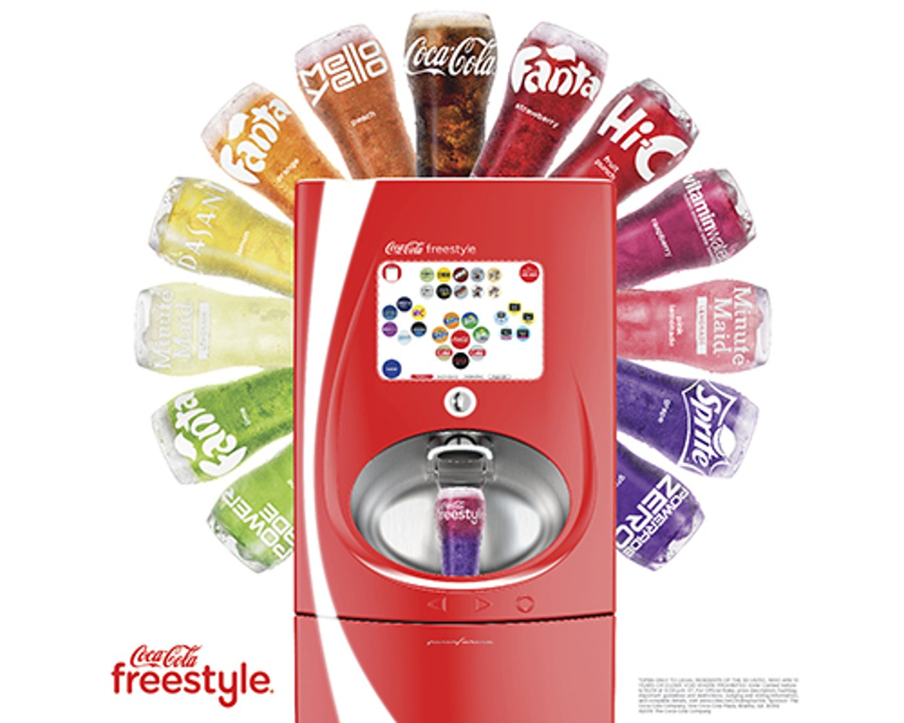

COCA–COLA FREESTYLE

Coca-Cola Freestyle is a touch screen soda fountain distributed and run by The Coca-Cola Company.
First launched in 2009, the machine features over 165 different Coca-Cola drink products, as well as custom flavors, allowing users to select from mixtures of flavors of Coca-Cola branded products which are then individually dispensed.